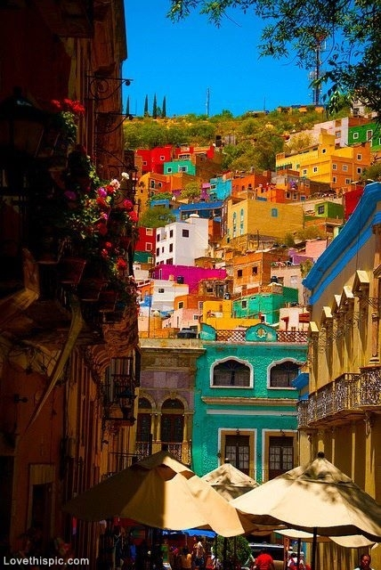
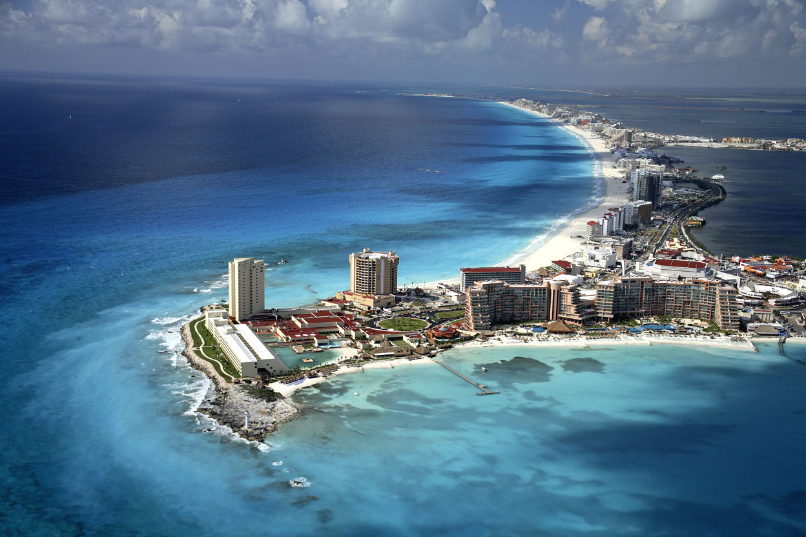
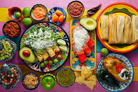
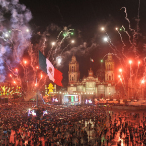
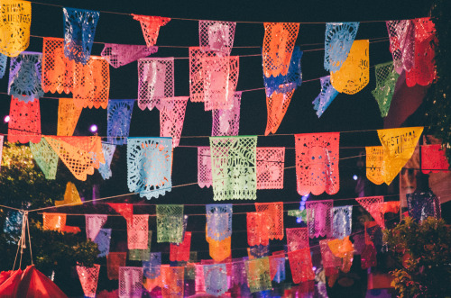

México significa “En el ombligo de la Luna” y proviene del Náhuatl “Metztli” (luna) y “xictli” (ombligo).(aunque hay un debate historiográfico). Tenemos una población de 119´713,203 habitantes. Más de la mitad, son mujeres.
Hermosas ciudades coloniales: Zacatecas, Guanajuato, Querétaro y Morelia, son algunos ejemplos de la hermosa arquitectura colonial que nos brinda el país en muchas de sus ciudades. Sitios llenos de leyendas y romanticismo que le seducirán.
Playas paradisiacas: Estancias en búngalos ecológicos al lado de una playa semi virgen , o centros turísticos exclusivos con todas las comodidades, México, brinda grandes opciones de norte a sur, desde el mar de Cortes con su rica biodiversidad marina, hasta las paradisiacas playas del Caribe mexicano catalogadas como las más bellas del mundo.
La Gastronomía mexicana: Recientemente la Unesco declaró a la Gastronomía mexicana "Patrimonio Cultural de la Humanidad" y es que recorrer México también es recorrer sus sabores. En cada lugar que visite, encontrará un sinfín de platillos e ingredientes que diferencian a cada región. Es un deleite probar los diferentes guisos de esta herencia invaluable.
Tradiciones y festividades: Las tradiciones y las festividades son parte fundamental de los mexicanos, ya que reivindican el carácter y la identidad de este pueblo. A lo largo del año, se puede presenciar y ser partícipe de celebraciones como el Día de Muertos, Semana Santa, el Aniversario de la Independencia, la Guelaguetza, el Festival Cervantino y numerosos, carnavales.
 La hospitalidad de los mexicanos: La alegría, el buen humor y las ganas de vivir, son características muy propias del mexicano, que se ven reflejadas en el caluroso recibimiento que brindan a los visitantes. Una vez que visita México, no solo se lleva el recuerdo de unas gratas vacaciones, también se lleva nuevos amigos en el corazón.

POR ESO Y MUCHAS OTRAS COSAS MEXICO ES UN PAIS HERMOSO